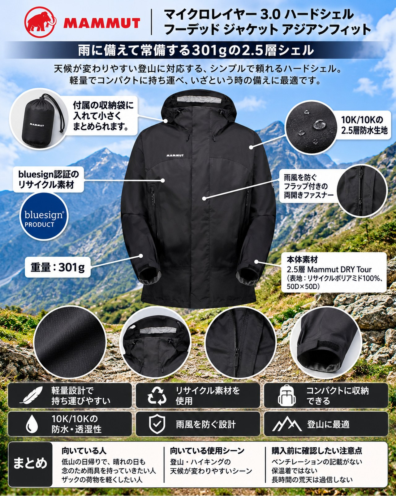

11月下旬は高い山が冬山シーズンに入り、登山の中心は低山に移ります。今週は24日に広い範囲で雨の予報が出ています。晴れの予報でも天気が崩れやすい季節なので、軽い雨具をいつもザックに入れておくと安心です。
導入
11月下旬は高い山が冬山シーズンに入り、登山の中心は低山に移ります。今週は24日に広い範囲で雨の予報が出ています。晴れの予報でも天気が崩れやすい季節なので、軽い雨具をいつもザックに入れておくと安心です。
今回紹介するのは、マムートの「マイクロレイヤー 3.0 ハードシェル フーデッド ジャケット アジアンフィット（メンズ）」（品番 1010-28652）です。公式はキャンプ、ハイキング、バックパッキング向けのハードシェルとしています。301gと軽く、付属の袋に入れて小さく持ち運べるのが特徴です。
今回は「使うかどうか分からない日に、軽さ優先で持っていく1枚」として見ていきます。低山の日帰りで、急な雨や風に備えたい人に向いたジャケットです。
基本スペック
※仕様と価格は2026年11月22日時点のもの。
| 項目 | 内容 |
|---|---|
| 商品名 | マイクロレイヤー 3.0 ハードシェル フーデッド ジャケット アジアンフィット |
| 品番 | 1010-28652 |
| 価格 | ¥29,700（税込） |
| 重量 | 301g |
| 生地 | 2.5層 Mammut DRY Tour（表地：リサイクルポリアミド100%、50D×50D） |
| メンブレン | ポリウレタン100% |
| 耐水圧 | 10,000mm |
| 透湿性 | 10,000g/m²/24h |
| サイズ | XS〜XXL（EURO表記） |
| カラー | black、dark marsh |
| 収納 | 付属の収納袋 |
付属の袋に収めて持ち歩ける
付属の収納袋に入れて小さくまとめられます。雨が降るか分からない日でも、ザックに入れておきやすい作りです。
10K/10Kの2.5層防水生地
生地は2.5層構造の Mammut DRY Tour で、耐水圧10,000mm・透湿性10,000g/m²/24hです。表地はリサイクルポリアミドで、PFCフリーの耐久撥水加工がされています。公式は、悪天候でもオーバーヒートを抑えてドライに保つ生地と説明しています。
雨風を防ぐフラップ付きの両開きファスナー
フロントの両開きファスナーには、雨風を防ぐフラップが付いています。フードは2点で調節でき、袖口は面ファスナー、裾はドローコードで調整できます。サイドポケットは2つで、どちらも撥水性のファスナー付きです。
bluesign認証のリサイクル素材
bluesign® PRODUCT の認証を受け、リサイクル素材を使っています。公式ページには Fair Wear の表記もあります。
デメリット・注意点
- ベンチレーションの記載がない：公式の機能説明には脇下のファスナーなどの換気機能が載っていません。登りで汗をかきやすい人は、前のファスナーを開けるなどして調整する必要があります。
- 保温着ではない：薄手のシェルなので、フリースや中綿ジャケットのような保温性はありません。冷え込む朝は中に保温着を重ねる前提です。
- 長時間の荒天は過信しない：どんな悪天候にも1着で対応できるとは考えないほうが安心です。耐水圧の数値は「何時間もつか」を示すものではありません。雪山や一日中続く雨には、より本格的なレインウェアが必要です。
- 2.5層の肌ざわり：裏地のない2.5層は、薄着の上に直接着たときの肌ざわりや蒸れ感に差が出やすい構造です。半袖の上に直接着る人は、購入前に試着して確かめると安心です。
- サイズ表記に注意：商品名は「アジアンフィット」ですが、フィットの表記は Regular Fit、サイズはEURO表記です。実寸（M：着丈72.0cm・身幅58.0cm）を見て選んでください。
- ポケットは2つだけ：公式の機能説明にあるのはサイドポケット2つで、胸ポケットの記載はありません。
向いている人・向いていない人
◎向いている人
- 低山の日帰りで、晴れの日も念のため雨具を持っていきたい人
- ザックの荷物を軽くしたい人
- 登山だけでなく、キャンプや旅行の急な雨にも使いたい人
△向いていない人
- 雪山や冬の高い山に行く人
- 一日中雨の中を歩く山行が多い人
- 汗をかきやすく、脇下の換気機能がほしい人
まとめ
マムートの「マイクロレイヤー 3.0 ハードシェル フーデッド ジャケット アジアンフィット」は、301gで付属の袋に収まる2.5層のハードシェルです。耐水圧10,000mm・透湿性10,000g/m²/24hで、フラップ付きの両開きファスナーや2点調節式フードなど、雨と風を防ぐ基本の装備がそろっています。
ベンチレーションがなく、長時間の荒天や雪山向けではありません。天気が崩れやすい初冬の低山で、「使わないかもしれないけれど持っておく」雨具を探している人に向いた1着です。
この記事で紹介した商品
価格・重量・在庫は各ブランド公式サイトの記載（確認日つき）にもとづきます。商品を押すと、購入先を選べます。
この記事にはアフィリエイト広告が含まれます。リンク先での購入により、当サイトが報酬を受け取る場合があります。山行の前には、最新の気象とルートの状況を必ずご確認ください。